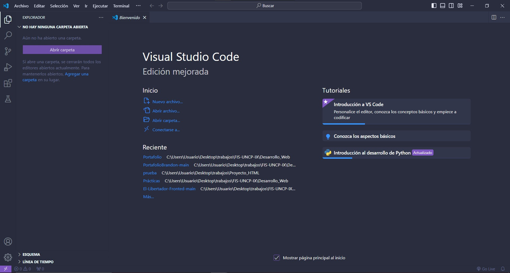
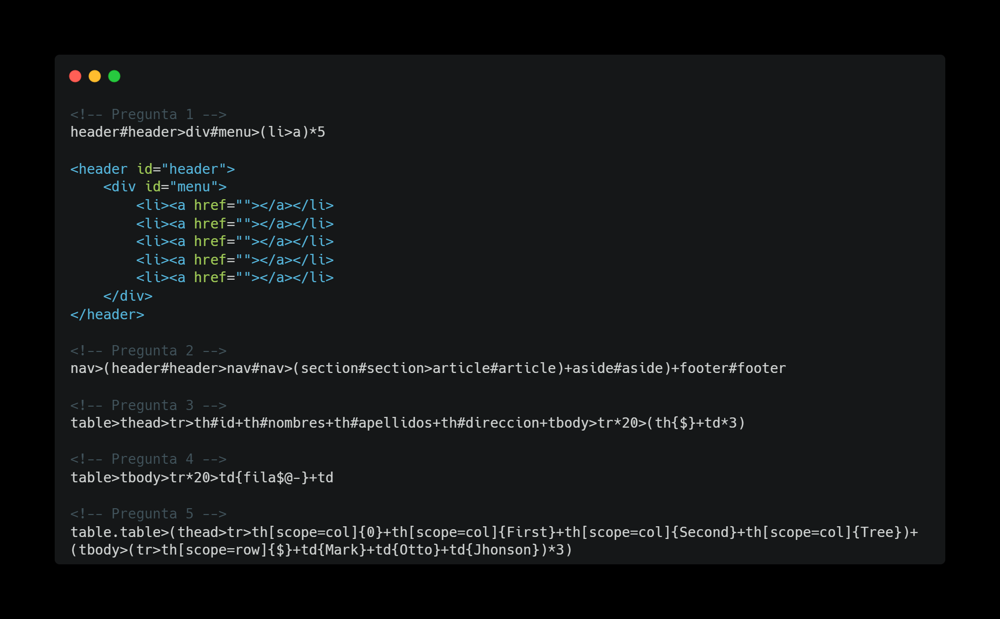

TECNOLOGIA WEB Y VISUAL CODE
En esta semana 1 hablaremos acerca de Tecnologías de Softwares un resumen de todo lo visto
DEFINICIONES
Nativo: Refiere al sistema operativo
Entre las tecnologias podemos mencionar a:
- HTML
- CSS
- WEB APP
Para la manipulacón DOM que refiere a la estructura :
- JAVA SCRIPT
- WEB APP
DNS: Sistema de nombres de dominio, hace referencia al sistema electronico de internet
Un ejemplo podria ser: www.uncp.edu.pe
El DNS traduce nombre de dominio a direciones IP
TCP/IP: Es un conjunto de protocolos, que permiten comunicar a las computadoras con otras. Estan compuesta por 4 capas:
- Enlace
- Internet
- Trasporte
- Aplicación
Si nosotros quisieramos conocer como el IP de nuestro equipo, la conectividad con un servidor o la latencia podrias utilizar estos comandos dentro del CMD.
- # IP del equipo: ipconfig
- Conectividad con el servidor: ping 192.181.10.3
- Recirrido de servidores(latencia): tracert youtube.com
Desarrollo de paginas web
Es comun que al querer introducirnos la mundo de la programación desconoscamos muchas cosas entre ellas que existe especialistas segun el lado del servidor.- Fronted : Especialista con la interactividad con el usuario es decir Interfaz
- Backend: Se dedica principalmente a la creacion y mantenimiento del software utilizan lenguajes.
- Fullstack: Ambas Fronted y Backend, orientado a una tecnología
Diseño de interfaz de usuario
Tambien reconocido por su siglas Diseño UX/UI se orienta a la experiencia del usuario. Una herramienta conicida Figma- UX : Refiere al hemisferio izquierdo, la arquitectura, accesibilidad etc.
- IX : Refire al hemisferio derecho que tiene relación con la identidad y conducta emocional
Visual estudio Code
Visual Studio Code es un editor de código fuente desarrollado por Microsoft para Windows, Linux, macOS y Web. Incluye soporte para la depuración, control integrado de Git, resaltado de sintaxis, finalización inteligente de código, fragmentos y refactorización de código. Que nos ofrece este editor y como aprovecharlo?.- Paleta de comandos
- Emmet, conjunto de complementos
- Marcación rapida de teclados

PROCEDIMIENTO
Para esta semana el procedimiento que se tuvo en cuenta fue el de aprendren un poco mas sobre las
bondades que nos ofrece la herramienta de Visual Code.
Algunos de ellos son:
- Hijos: h1+h2
- Padres: div>p
- Multiplicación: p*3
- Referencia: a{link_real}
- cadenas de codigo: ol>li{item $}*5
Luego se realizo una practica en la cual nosotros debimos realizar uso de estos atajos para llamar a las etiquetas.

RESULTADOS
Con esta semana introductoria a las Tecnologias de softwares, tendremos en nosotros los siguientes
resultados.
- Tendremos conocimiento sobre las distintas tecnologias
- Sabremos acerca de lo que es un desarrollador BACKEND Y FRONTED
- Conoceremos herramientas de desarrollo
- Utilizaremos Visual Studio Code
- Sabemos utilizar la paleta de comandos
- Seremos agiles en la digitalización de códigos (etiquetas)